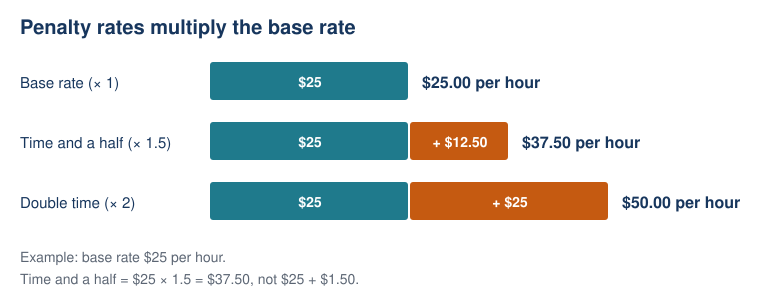

Lesson 2: Overtime, Weekend and Public Holiday Pay
Year level: Year 10 (middle ability set)Duration: 60 minutesFocal concept/topic: Earning money: penalty rates for overtime, weekends and public holidays |
Lesson aim: Show that overtime, weekend and public-holiday pay all follow one rule, the base hourly rate multiplied by a multiplier, and apply that rule to an irregular week of shifts and to overtime from a real award pay guide. |
Learning intention: We are learning to calculate pay for overtime, weekend and public-holiday shifts by multiplying the base hourly rate by a multiplier. Success criteria: □ I can work backwards from total pay to find the base hourly rate
□ I can tell apart "time and a half" (× 1.5) and "double time" (× 2), and explain why the multiplier is multiplied, not added
□ I can calculate total pay for an irregular week (weekday, Saturday, public holiday)
□ I can calculate overtime pay when the rate changes after the first 2 hours |
Syllabus outcomes and content: NSW Mathematics K–10 Syllabus (NESA, 2022)
- MA5-FIN-C-01: solves financial problems involving simple interest, earning money and spending money
- MAO-WM-01: develops understanding and fluency in mathematics through exploring and connecting mathematical concepts, choosing and applying mathematical techniques to solve problems, and communicating their thinking and reasoning coherently and clearly
- Content: Solve problems involving wages given an hourly rate of pay including penalty rates for overtime, weekends and public holidays
| Working Mathematically indicators:
- Work backwards from total pay to find an hourly rate (Starter, You do Q2)
- Generalise a set of worked calculations into the rule pay = base rate × multiplier × hours (Build the rule)
- Check a calculated rate against the rate printed in an official pay guide (Overtime)
- Identify and explain an error in another student's working (Spot the Mistake, exit ticket (b))
|
ICT: | LIT:
- Translate the phrases "time and a half", "double time" and "double time and a half" into the multipliers × 1.5, × 2 and × 2.5, and record them in a reference box that stays on the board
- Read a column heading from a real pay guide ("Overtime – Monday to Friday – first 2 hours") and say what it means in everyday words
- Students explain an error in one full sentence using "because" (Spot the Mistake, exit ticket (b))
|
Prerequisite knowledge:
- From Lesson 1: wage = hourly rate × hours worked
- Finding a percentage of an amount
- Multiplying and dividing decimals
- Reading a table of shifts
| Resources:
- Slides (starter, Ella's week, reference box, pay guide extract, Spot the Mistake)
- Extract from the Fair Work Ombudsman pay guide for the Hospitality Industry (General) Award, cut down to the Level 1 food and beverage attendant row and showing the hourly rate and the two Monday-to-Friday overtime rates
- You do worksheet (Q1–Q3 and extension), with the reference box printed once at the top
- Pre-drawn three-column table (base rate, multiplier, hours) for students who need structure
- Exit ticket
- Calculators
|
Labels used in this plan: WM Working Mathematically LIT Literacy ICT Technology AfL Assessment for learning AoL Assessment of learning
Key teacher question → Expected: suggested student response. Self-designed WM indicators are in italics.
Teaching sequence
| Steps & timing | Teaching & learning activities |
|---|
| ORIENTATION0–6 minStarter and learning intentionAfLWM |
Teacher
- Display the starter while taking the roll: "Ella is a casual barista. She worked a 4-hour weekday shift and was paid $105, which included a $5 tip. What is her hourly rate?"
- Give extra time to any skill that scored low in the Lesson 1 diagnostic (Q3, Q4, Q7 or Q8).
- Call on named students in turn rather than volunteers.
- Reveal the learning intention and success criteria.
Key question: Which part of the $105 is not pay for the hours Ella worked?
Expected: The $5 tip. It is not paid per hour, so take it off first: $105 − $5 = $100.
Key question: How do you get from $100 to her hourly rate?
Expected: Divide by the 4 hours: $100 ÷ 4 = $25 per hour. It is Lesson 1's "pay = hourly rate × hours", worked backwards.
Students
- Work out the hourly rate on their own, then answer when named.
Check / support
- Students who start with $105 ÷ 4 = $26.25 have missed the tip. Ask: "Did Ella earn the tip for each hour?"
|
| ENHANCING6–16 minWorked example: Ella's weekAfLLITWM |
Teacher
- Ella's base rate is the $25 found in the starter. Show her week as a table: Thursday 5 h (normal), Saturday 4 h (time and a half), Sunday 6 h (double time). Explain that these are the rates at Ella's café.
- LIT Before any calculation, write "time and a half → × 1.5" and "double time → × 2" next to the table.
- Work through each day, calling a named student to explain each step.
Model
- Thursday: $25 × 5 = $125
- Saturday: $25 × 1.5 = $37.50 per hour, then $37.50 × 4 = $150
- Sunday: $25 × 2 = $50 per hour, then $50 × 6 = $300
- Total: $125 + $150 + $300 = $575
Key question: What does this 4 represent?
Expected: The 4 hours Ella worked on Saturday.
Key question: Why is Ella's Saturday rate $37.50 and not $26.50?
Expected: Time and a half means one and a half times the base rate: $25 plus half of $25 ($12.50) is $37.50. $26.50 comes from adding $1.50, which is wrong.
Students
- Copy the table and working, and explain a step when named.
|
| ENHANCING16–22 minBuild the ruleWMLIT |
Teacher
- Ask what was done the same way on every day.
- Build the rule with the class, then write it in a reference box at the top of the board. It stays up until the exit ticket.
Pay = base rate × multiplier × hours
Ella's café: weekday × 1 | Saturday (time and a half) × 1.5 | Sunday (double time) × 2 | public holiday (double time and a half) × 2.5
Key question: What multiplier does a normal weekday hour have?
Expected: × 1. The base rate does not change.
Key question: Using the rule, how much would Ella earn for 3 hours on a public holiday?
Expected: $25 × 2.5 × 3 = $187.50.
Students
- Suggest each part of the rule, then copy the reference box.
|
| ENHANCING22–30 minOvertime from a real pay guideWMLITAfL |
Teacher
- Explain that overtime means hours worked beyond a worker's normal hours, and that it is usually paid at a higher rate.
- Show the pay guide extract. Liam works full-time as a food and beverage attendant (Level 1) under the Hospitality Industry (General) Award. His hourly rate is $26.44. The pay guide lists "Overtime – Monday to Friday – first 2 hours" as $39.66 and "after 2 hours" as $52.88 (Fair Work Ombudsman, 2026a).
- LIT Read the two column headings aloud and ask a student to say them in everyday words: "the first 2 overtime hours are paid at one rate, and every hour after that at a higher rate."
- Students check the two rates with the rule, then the class works out Liam's pay for 4 hours of overtime on Wednesday.
Model
- Check the rates: $26.44 × 1.5 = $39.66 (time and a half). $26.44 × 2 = $52.88 (double time). Both match the pay guide.
- First 2 hours: $39.66 × 2 = $79.32
- Next 2 hours: $52.88 × 2 = $105.76
- Overtime pay: $79.32 + $105.76 = $185.08
Key question: Why can't we just do 4 × $39.66?
Expected: Only the first 2 hours are at time and a half. After 2 hours the rate changes to double time. 4 × $39.66 = $158.64, which is $26.44 too little.
Students
- Check the two rates on calculators, then copy the model.
|
| ENHANCING30–38 minThe common mistake, then Spot the MistakeAfLWMLIT |
Teacher (30–32)
- Name the common mistake directly. The multiplier is multiplied, never added.
Key question: Jayden's base rate is $22. Is his time-and-a-half rate $23.50 or $33?
Expected: $33. Half of $22 is $11, and $22 + $11 = $33, which is the same as $22 × 1.5. $23.50 comes from adding 1.5.
Teacher (32–38)
- Display the task: "Jayden earns $22 per hour. He worked 6 hours on Saturday at time and a half. His working: $22 × 1.5 = $33, then $33 + 6 = $39."
- Call one named student to find the error, then a different named student to explain why it is wrong.
- LIT The explanation must be one full sentence using "because".
Key question: Which line is wrong?
Expected: The second line. He added the 6 hours instead of multiplying.
Key question: Why is adding the 6 wrong?
Expected: It is wrong because he earns $33 for each of the 6 hours, so it is 6 lots of $33: $33 × 6 = $198.
Students
- Find and explain the error when named, then correct the working in their books.
|
| ENHANCING38–52 minYou do: an irregular week, and overtimeWMAfL |
Teacher
- Hand out the worksheet.
- AfL Circulate. Look for students adding the multiplier, and prompt them with "Read that line aloud. Is it 'times' or 'plus'?"
- Give the pre-drawn three-column table, with Ella's Saturday worked as the first row, to students who need structure.
Students
Work on their own. Q1. Mia earns $24 per hour. This week she worked Tuesday 5 h (normal), Saturday 6 h (time and a half), and 4 h on the Monday public holiday (double time and a half). (a) Find Mia's hourly rate on each day. (b) Find her total pay for the week. Q2. Ali worked 6 hours on a Saturday at time and a half and was paid $243. What is Ali's base hourly rate? Q3. Liam (base rate $26.44) works 3 hours of overtime on Thursday. Use the pay guide rule (first 2 hours at time and a half, after that double time) to find his overtime pay.
- Extension. Mia (base rate $24) is offered two ways to be paid for a 6-hour Saturday shift. Option A is time and a half. Option B is her normal rate plus a flat $50 bonus. (a) Which option pays more, and by how much? (b) For what length of shift would the $50 bonus pay more?
|
| SYNTHESIZING52–60 minSummary and exit ticketAoLAfL |
Teacher
- Ask the class to state today's rule in their own words.
- Go back to the four success criteria. Students tick the ones they can now do on their exit ticket.
Key question: What is the same about overtime, Saturday, Sunday and public-holiday pay?
Expected: They all use the base rate times a multiplier. Only the multiplier changes.
- Cover the reference box. Hand out the exit ticket and collect it before students leave.
Exit ticket
Zoe earns $20 per hour. She worked 4 hours on Wednesday and 3 hours on Sunday at double time.
(a) Find Zoe's total pay.
(b) Zoe's friend says her Sunday rate is $20 + 2 = $22 per hour. Explain the mistake in one sentence.
Success criteria: tick the ones you can now do. For any you cannot tick, write the step that is still unclear.
Students
- Complete the exit ticket on their own, without the reference box.
After the lesson
- AoL Mark the exit tickets against the success criteria.
- AfL Read the unticked success criteria alongside the answers. Sort the tickets into three piles: correct, added the multiplier, and arithmetic slip. The largest error pile decides which Lesson 3 starter question gets the most time.
|
Worked solutions
| Task / question |
Worked solution |
| Starter |
$105 − $5 = $100, then $100 ÷ 4 = $25 per hour |
| Worked example (Ella's week) |
Thursday $25 × 5 = $125. Saturday $25 × 1.5 = $37.50, × 4 = $150. Sunday $25 × 2 = $50, × 6 = $300. Total $575 |
| Build the rule (public holiday) |
$25 × 2.5 × 3 = $187.50 |
| Overtime (Liam, 4 hours) |
$26.44 × 1.5 = $39.66. $26.44 × 2 = $52.88. $39.66 × 2 = $79.32. $52.88 × 2 = $105.76. Total $185.08 |
| "4 × $39.66" error |
4 × $39.66 = $158.64. $185.08 − $158.64 = $26.44 too little |
| Jayden's time-and-a-half rate |
$22 × 1.5 = $33 |
| Spot the Mistake |
Correct working: $22 × 1.5 = $33, then $33 × 6 = $198 |
| Q1 (a) |
Tuesday $24. Saturday $24 × 1.5 = $36. Public holiday $24 × 2.5 = $60 |
| Q1 (b) |
$24 × 5 = $120. $36 × 6 = $216. $60 × 4 = $240. Total $576 |
| Q2 |
$243 ÷ 6 = $40.50 per hour at time and a half, then $40.50 ÷ 1.5 = $27 base rate |
| Q3 |
First 2 hours $39.66 × 2 = $79.32. Third hour $52.88 × 1 = $52.88. Total $132.20 |
| Extension (a) |
A: $24 × 1.5 × 6 = $216. B: $24 × 6 + $50 = $194. Option A pays $22 more |
| Extension (b) |
Time and a half adds $12 per hour on top of the normal rate ($24 × 0.5). For 4 hours that is $48, less than $50, so the bonus pays more. For 5 hours it is $60, more than $50. Shifts of 4 hours or less |
| Exit ticket (a) |
$20 × 4 = $80. $20 × 2 = $40, × 3 = $120. Total $200 |
| Exit ticket (b) |
Double time means the base rate is multiplied by 2, so Zoe's Sunday rate is $40 per hour, not $22. |
Adjustments and anticipated misconceptions
| Misconception |
Why students think this |
How this lesson addresses it |
| Time and a half means adding $1.50 (or adding 1.5) |
"And a half" sounds like adding something small, and students read 1.5 as an amount of money. |
Key question "$37.50 or $26.50?". Reference box links each phrase to a multiplier. Direct teaching of the mistake at 30–32 min. |
| Hours are added instead of multiplied |
Students see two numbers on a line and combine them the quickest way. |
Spot the Mistake (Jayden), with a "because" sentence. Exit ticket (b). |
| All overtime hours are paid at the same rate |
Most examples students meet use one rate for the whole shift. |
Key question "Why can't we just do 4 × $39.66?", using the real pay guide headings. |
| Working backwards divides by the multiplier only, not by the hours |
Two divisions are needed and students stop after one. |
Starter (divide by hours) and Q2 (divide by hours, then by 1.5). |
| "Overtime" and "penalty rate" are the same thing |
Both mean "higher pay", and the words are abstract. |
Vocabulary with the time-and-a-half diagram. Overtime is taught separately from weekend rates. |
| Students who need… |
Adjustment |
| more support |
Pre-drawn three-column table (base rate, multiplier, hours), with Ella's Saturday filled in as a worked example ($25 × 1.5 × 4 = $150). The reference box is printed on the worksheet. |
| more challenge |
Q2 (working backwards) and the extension comparing a flat bonus with time and a half. |
| language support (EAL/D) |
Each phrase ("time and a half", "double time") is written next to its multiplier. Sentence starter for explanations: "It is wrong because…" |
Vocabulary
| Term |
Definition |
Image |
| hourly rate (base rate) |
The amount paid for each hour of normal work |
|
| wage |
Pay worked out as hours worked × hourly rate (Lesson 1) |
|
| shift |
One block of hours worked in a day |
|
| overtime |
Hours worked beyond a worker's normal hours, usually paid at a higher rate |
|
| penalty rate |
A higher rate paid for working at times such as weekends, public holidays or late at night |
|
| multiplier |
The number the base rate is multiplied by, for example × 1.5 or × 2 |
|
| time and a half |
Base rate × 1.5 |
Diagram below |
| double time |
Base rate × 2 |
Diagram below |
| public holiday |
An official holiday, for example Christmas Day, when penalty rates usually apply |
|
| pay guide |
A Fair Work Ombudsman summary of the minimum pay rates in an award |
|

Note on real-world rates
Ella's café rates (Saturday × 1.5, Sunday × 2, public holiday × 2.5) are clean figures chosen for first meeting the idea of a multiplier. Real rates depend on the award and on whether the worker is full-time, part-time or casual.
In the Fair Work Ombudsman pay guides for the General Retail and Hospitality awards, a casual Level 1 worker's Saturday, Sunday and public-holiday rates work out to 150%, 175% and 250% of the base rate (Fair Work Ombudsman, 2026a, 2026b).
If there is time after the worked example, raise this with the class. Real rates are not always round numbers, so workers should check their payslip against their own award.
Sources acknowledged in this lesson